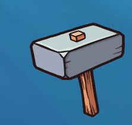
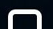

Test Case testOnePlus.air
Author: gouchang
2018-09-15 23:57:14 -- 2018-09-15 23:57:32
Assert: Test Steps Summary
No record information found.
Step 1 Keyevent [2018-09-15 23:57:14]
keyname: POWER
kwargs: {}
Click [POWER] button
Step 2 Swipe [2018-09-15 23:57:19]
resolution: [1080.0, 2280.0]
v2: None
vector: [0, -0.6]
kwargs: {}


Matching confidence: 0.99962413311
Swipe on screen
Step 3 Touch [2018-09-15 23:57:21]
kwargs: {}
resolution: [1080.0, 2280.0]
times: 1

Matching confidence: 0.999771237373
Touch target image
Step 4 Touch [2018-09-15 23:57:22]
kwargs: {}
resolution: [1080.0, 2280.0]
times: 1

Matching confidence: 0.999647736549
Touch target image
Step 5 Wait [2018-09-15 23:57:28]
interval: 0.5
intervalfunc: None
timeout: None
resolution: [2280, 1080]

Matching confidence: 0.92140224576
Wait for target image to appear
Step 6 Keyevent [2018-09-15 23:57:29]
keyname: HOME
kwargs: {}
Click [HOME] button
Step 7 Touch [2018-09-15 23:57:30]
kwargs: {}
resolution: [1080, 2280]
times: 1

Matching confidence: 0.977452218533
Touch target image
Step 8 Swipe [2018-09-15 23:57:31]
resolution: [1080, 2280]
v2: None
vector: [0.5, 0]
kwargs: {u'duration': 0.05}

Matching confidence: 0.99987411499
Swipe on screen
Step 9 Keyevent [2018-09-15 23:57:32]
keyname: POWER
kwargs: {}
Click [POWER] button